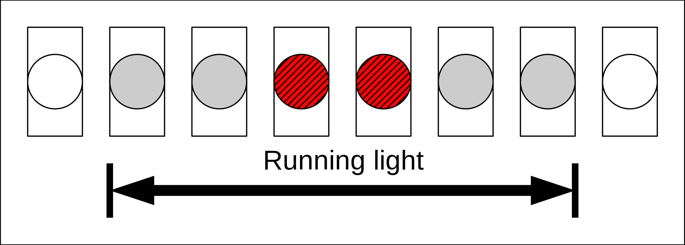

Ex. 3: Software development and system simulation
Objectives
use regtool & reggen
map module requirements to the options of the generated registers
integrate the generated HDL & C
C data structures for “bare metal” programming
understand the rvlab software build and upload flow
system level simulation with software
trace program execution using the disassembly together with the wave view
debug software using the wave view and transcript
Preparation
Read the Design Reference to make yourself familiar with the rvlab design.
Read the Software tutorial.
Read the “RISC-V reference card” (skipping sections RV32A, RV32F, RV32C) linked on the Resources page.
Study the flow for centralized register definitions in a hard/software co-design as described in the OpenTitan Reggen Manual linked on the Resources page.
Tasks
Hints
Before starting this exercise you should have completed Ex. 2: Logic synthesis, P&R and netlist simulation, i.e. simulated your running light with software and thus verifying its synthesizability and integration into the rvlab SoC.
1. Register definitions
The register definitions of the predefined hardware components are in rvlab/src/design/reggen/.
Add a definition for your running light (student_rlight.hjson).
Run the reggen tool to generate the Verilog, C and HTML files:
flow reggen.generate
Replace your current register implementation of student_rlight.sv, i.e. the tul_adapter_reg and the read/write processes operating on the register bus by instantiating the generated RTL from rvlab/build/reggen/generate/rtl/student_rlight_reg_top.v.
Add the module’s base address to rvlab/src/sw/include/rvlab.h.
The generated C and HTML files are located in rvlab/build/reggen/generate/include/reggen and rvlab/build/reggen/generate/html, respectively.
Note
From now on all your software and hardware modules should only use addresses defined with the redgef flow directory. You will later need to add more modules in the same way.
2. Software: Hardware abstraction layer
Write a small driver for your running light module in separate files (i.e. student_rlight.c and student_rlight.h). It should adhere to the principles discussed in the exercise: This driver should encapsulate all register accesses and addresses, i.e. only use the generated C code to access the hardware. It should also provide an abstract view of your hardware module, hiding all implementation details.
3. Software: Mini application
With the help of software a new running light mode, which is not directly supported by the hardware, shall be implemented. An arbitrary pattern of the inner LEDs shall run in ping-pong mode on the six ’Grey’ LEDs without the two outermost ’White’ LEDs ever lighting up. The pattern “0110” for example would be shifted two steps to the left/right while the pattern “1001” would be shifted only one step. The software should not just simply use a brute force approach and write to the pattern register continuously, but rather poll the status register of the running light and issue the command for a mode change at the right moment.
The duration how long a pattern is displayed should be determined by the hardware setting (“N”), i.e. not be influenced by the run time of the software. For example when the pause is set to 500 cycles per pattern, each pattern should be displayed exactly for 500 cycles, regardless of any mode change in between.
{kind=link}
4. System simulation using software
Simulate the software developed in task 3 with the start pattern depicted above for at least two complete LED cycles. Set the speed of your running light to a reasonable value to allow the software to remain synchronized. Then increase the speed in further simulation runs until the outermost ’White’ LEDs lights up. Optimize the software to handle a speed as high as possible (without the outer LEDs lighting up).
Use the Wave View to trace the start up sequence of the CPU and compare the executed instructions with the assembler sources (rvlab/src/sw/crt0.S) and the disassembled memory image (sw.disasm). This skill becomes very important when debugging later in the project.
Start the simulation as follows:
flow systb_rlight.sim_rtl_questa
Deliverables
All deliverables should be submitted in a single PDF file.
Wave views should be zoomed in as much as possible to only show the sections specified below. At least the following signals should be shown of your running light: clk, LEDs, state, delay counter and register bus at tlul_adapter_reg.
- 1. Questions
to 4: What is the highest speed of the running light your software can handle ?
to 4: How many clock cycles does your application require for a complete pass of its main loop?
to 4: How many clock cycles after the 1st instruction in ctrt0.S is the stack pointer of the IRQ initialized?
- 2. Deliverables of task 4
the register definitions of your running light (generated HTML)
source texts of the .c and .h files you created or modified (driver and mini application) yourself (not the generated source files)
a wave view from the system simulation which shows the lightening up of an outermost “grey” LED and the following write access of the software to the mode register